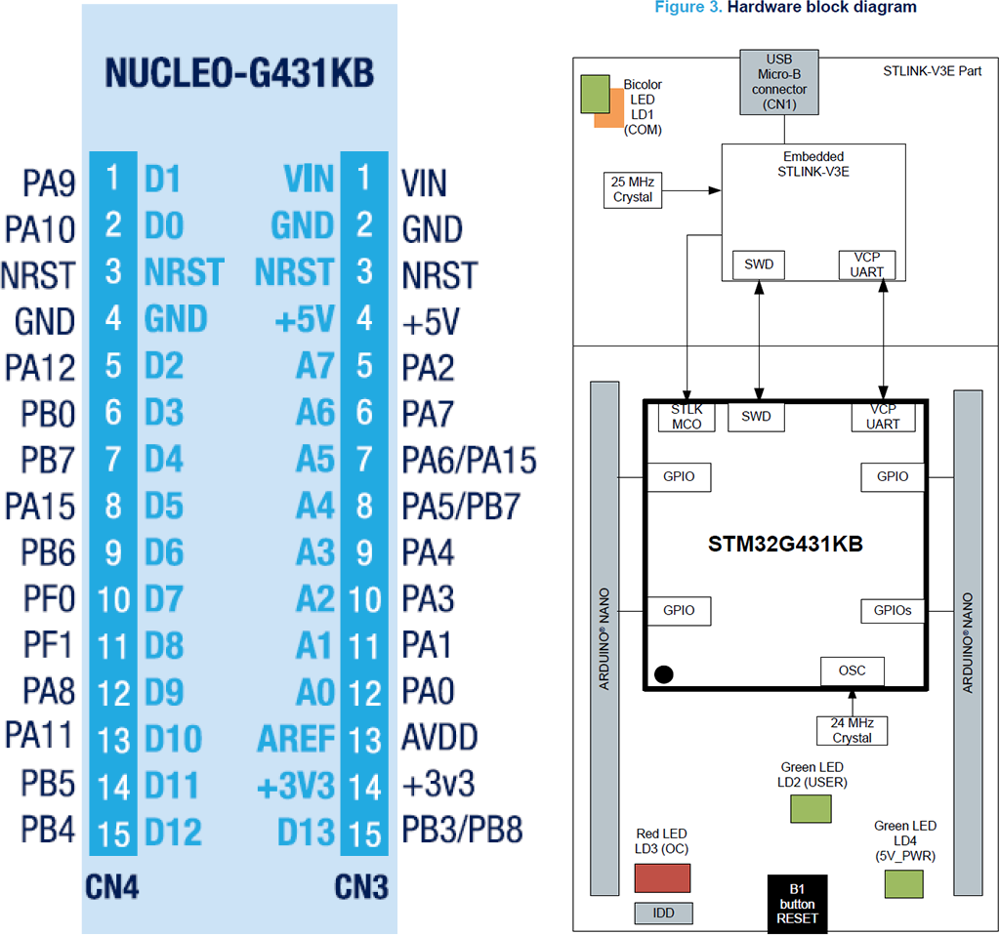
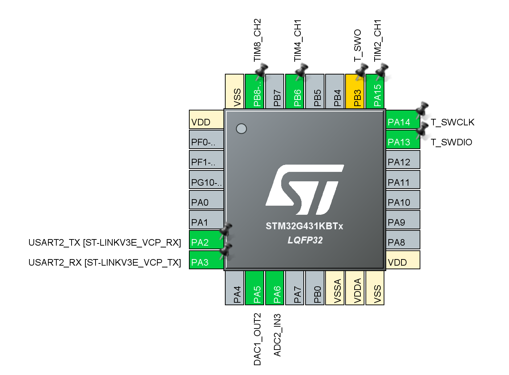
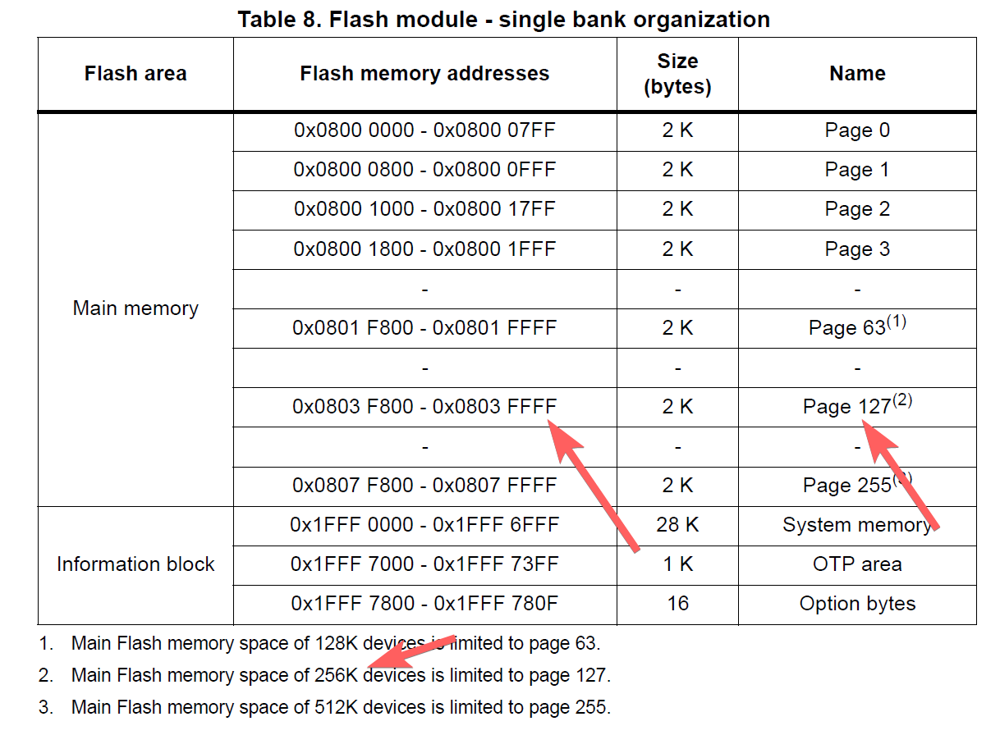
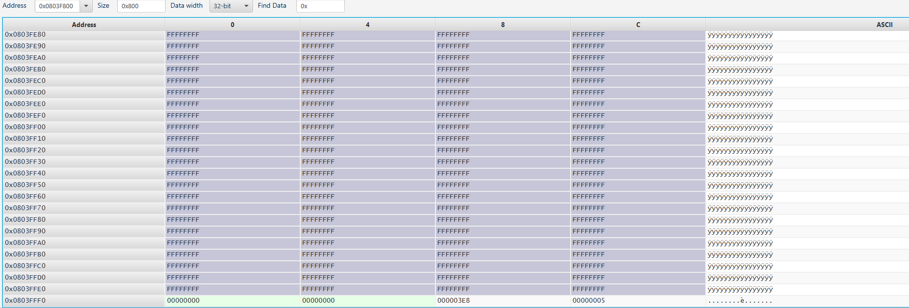

Introduction
Hardware Basics
Project Using STM32G431KB as Example. Test hardware is NUCLEO-G431KB.
STM32CubeMX File Included.
Hardware using jumper pin only to test out all functionalities.
Build This Project
More Docker Details Visit https://github.com/jasonyang-ee/STM32-Dockerfile
-
Auto Docker Build Command
docker run -rm -v {Your_Local_Full_Path}:/home jasonyangee/stm32-builder:ubuntu-latest https://github.com/jasonyang-ee/STM32G431KB
-
Manual CMake Build Command
cmake -B build -G Ninja cmake --build build
Pin Map
Use /CubeMX/CubeMX.ioc for complete info
 
Folder Structure
This project uses HAL. Code generation using CubeMX, and the generated code structure is untouched for /Core /Driver /Middlewares.
The only modification is that main.c and main.h are moved into /Application for better workflow.
The c++ layer is done in /Application. All c++ class object are to represent each device or feature. Then, all objects are decleared globally in Instances.hpp. This will allow controlling class (State Machine or FreeRTOS) to easily access those instances and mutate data.
Serial UART
Serial COM is the base of all debugging and user interface for this project. It is used in interrupt mode only. DMA is not necessary because of my string buffer.
Machnism
A STL string buffer is used to cache all pending to send data. This is gambling on that all data will be send on a fast scheduler to minimize the risk of stack overflow.
This is really convineant that one do not have to worry about data size to exceed TX buffer size.
The receiving buffer size is the only thing must be pre-determined which is easy. That is just your command max length.
In short, both RX and TX buffer size are share defined as below.
SerialCOM.hpp
#ifndef UART_BUFFER
#define UART_BUFFER 64
#endif
A better practice maybe using ETL library where string max size can be defined. But, whatever.
Use of UART Object
sendString(std::string)andsendNumber(any_number)to add data to buffer.sendLn()for fast formatting.sendOut()to initiate transmission. Recall this funtion inHAL_UART_TxCpltCallbackto send all buffer.- Start of the Instance:
Before main():
SerialCOM serialCOM{};
Inside main():
MX_USART2_UART_Init();
serialCOM.setPort(&huart2);
HAL_UARTEx_ReceiveToIdle_IT(&huart2, serialCOM.m_rx_data, UART_BUFFER);
LED
LED is the 2nd debugging interface. Running it in breathing / blink / rapid mode will help you to determine if system is at fault.
And it is fun to stare at LED anyway.
Machnism
LED is controlled by PWM. PWM is controlled by period and duty cycle. period is the time it takes to complete one cycle. duty cycle is the time it takes to complete one cycle in high state.
PWM
-
PrescalerxOverflow=Clock Source=System Clock/Desired PWM Frequency -
If wanting period be 100 for ease of duty cycle setting:
-
32Mhz / 1KHz / 100 = 320
-
=>
prescaler: 320-1,period: 100-1,PWM Frequency: 1KHz -
If wanting max precision with using max period:
-
32Mhz / 1KHz / (if > 65535) then divide 65535 (16bit period)
-
=>
prescaler: 1-1,period: 32000-1,PWM Frequency: 1KHz -
Use
clock source:internal clock (APBx)
Interrupt Via PWM OC (output compare) signal
- Enable
PWM global interrupt - Run
HAL_TIM_PWM_Start_IT(&htimX, TIM_CHANNEL_X)inmain() - Define
void PWM_PulseFinishedCallback(TIM_HandleTypeDef *htim) - Run
led_user.scheduler()in thePWM_PulseFinishedCallback
LED Class
- Init object
LED led_user{period, dimmer, Interrupt Frequency} - Passthogh channel CCR with
led_user.setCCR(&htimX.Instance->CCRX); - Ready to use
on(),off(),toggle(),set(),breath(),blink(),rapid().
CLI
I am using lwshell. Credit to https://github.com/MaJerle/lwshell
Machnism
-
Direct usage without FreeRTOS:
- Inside
HAL_UARTEx_RxEventCallback():cli.setSize(Size); cli.parse();
- Inside
-
Start of the Instance:
-
Before
main():CLI cli{}; -
Inside
main():cli.init();
-
C++ Wrapper
Additionally, I made a c++ wrapper class to use lwshell.
This is how you do all the functions and use this hardware as playground. All playground feature should be accessed via this Command Line Interface.
CLI input and output using UART (SerialCOM) as described above.
To expend commands:
-
Add a static function that returns its run result
static int32_t led(int32_t, char**); -
Register this function to be called when command is parsed in the RX.
lwshell_register_cmd("led", &CLI::led, NULL); -
Complete your command function.
REMEMBER TO
return int32_t;ELSE SYSTEM WILL GET STUCK.
Customization
Finally, we can populate our static custom command functions.
You will need to define the command and register it in init().
Example Command with Sub Commands:
-
Inside init():
lwshell_register_cmd("led", &CLI::led, NULL); -
Function Define:
static int32_t CLI::led(int32_t argc, char** argv) { const char* led_help = "\nLED Functions:\n" " on\tTurns ON LED\n" " off\tTurns OFF LED\n" " breath\tLED in breath effect mode\n" " blink\tLED in slow blink mode\n" " rapid\tLED in fast blink mode\n\n"; if (!strcmp(argv[1], "help")) serialCOM.sendString(led_help); if (!strcmp(argv[1], "on")) led_user.on(); if (!strcmp(argv[1], "off")) led_user.off(); if (!strcmp(argv[1], "breath")) led_user.breath(); if (!strcmp(argv[1], "blink")) led_user.blink(); if (!strcmp(argv[1], "rapid")) led_user.rapid(); return 0; }
FreeRTOS
C++ Wrapper
I made a c++ wrapper class to use FreeRTOS. That's the main idea here.
To expend your task:
- Define the task handler and function
TaskHandle_t parse_Handle; void parse(); - Use lamda to create the task
auto t1 = [](void *arg) { static_cast<Thread *>(arg)->parse(); }; xTaskCreate(t1, "cli parsing", 256, this, -2, &parse_Handle); - Trap the task into its own tiny while() like the one in your main()
void Thread::parse() { while (1) { vTaskSuspend(NULL); cli.parse(); } } - Use task control (i.e. queue, notify, suspend, resume) to run your app and feature.
xTaskResumeFromISR(thread.parse_Handle);
Use of FreeRTOS Wrapper Class
The task are created in the object initialization using Lamda due to C++ wrapping.
- In object initializer:
auto t1 = [](void *arg) { static_cast<Thread *>(arg)->parse(); }; xTaskCreate(t1, "cli parsing", 256, this, -2, &parse_Handle);
Each of the corresponding task are decleared with its handle typle.
- In header:
TaskHandle_t parse_Handle; void parse();
FreeRTOS Debugging
- Install VS Code Extension: RTOS Views (
mcu-debug.rtos-views) - Use a hardware timer with 20KHz setting. In this projcet timer 7 is used.
- Include the follwing code to enable full debugging feature.
In FreeRTOSConfig.h:
#include "tim.h" // Using 20kHz hardware timer
#define configUSE_TRACE_FACILITY 1 // Show RTOS task ID stats
#define configUSE_STATS_FORMATTING_FUNCTIONS 1 // Enable using vTaskList()
#define configRECORD_STACK_HIGH_ADDRESS 1 // Show RTOS stack stats
#define configGENERATE_RUN_TIME_STATS 1
#define portCONFIGURE_TIMER_FOR_RUN_TIME_STATS() MX_TIM7_Init()
#define portGET_RUN_TIME_COUNTER_VALUE() htim7.Instance->CNT
In MX_TIM7_Init():
/* USER CODE BEGIN TIM7_Init 2 */
__TIM7_CLK_ENABLE();
HAL_TIM_Base_Init(&htim7);
HAL_TIM_Base_Start(&htim7);
State Machine
Flash
The goal is to save and load user configurations for application. Writting from the back of the flash memory.
Porting to different hardware requires user to edit Flash.hpp and Flash.cpp
Refer to the Reference Manual and find out the end of flash address. Then, update those two variable.
// G432KB has 128Kb of flash
// Same as (0x0803FFFF + 1 - 0x8); if using datasheet provided value
const uint32_t m_address_end{0x08040000 - 0x8};
const uint8_t m_page_total{127};

The configuration data are packaged into a struct and union aligned to uint64_t array for double word HAL flash writing function. The pack and unpack is done manually by user.
You will need to edit this section to fit your application needs.
// Edit config_arr_size and Config content.
#define config_arr_size 2
union Config_Arr {
struct Config {
uint32_t led_level;
uint32_t led_scale;
} config;
uint64_t config_arr[config_arr_size];
};
In the public function Save() and Load(), you will need to manually pack and unpack your configuration to/from each of your instances.
Then, you will call the private function Write() and Read() to do flash access.
Below example saves and loads two configuration from LED usage.
void Flash::Save() {
Flash::Config_Arr current_config{};
current_config.config.led_level = led_user.getLevel();
current_config.config.led_scale = led_user.getScale();
Write(current_config.config_arr, config_arr_size);
}
void Flash::Load() {
Flash::Config_Arr loaded_config{};
Read(&loaded_config, config_arr_size);
led_user.setLevel(loaded_config.config.led_level);
led_user.setScale(loaded_config.config.led_scale);
}
The memory save example:

DAC
DAC using interrupt mode as of now.
Two function is required to run with HAL:
- HAL_DAC_Start(m_port, m_channel);
- HAL_DAC_SetValue(m_port, m_channel, m_alignment, count_value);
HAL_DAC_Start() will call HAL_Delay(), and if used before vTaskStartScheduler(), then it will mess up with FreeRTOS causing thread to stuck in loop.
Solutin is to move HAL_DAC_Start() into setState(). But, this likey will cause minor delay in runtime since every change of DAC value will call HAL_DAC_Start() again.
Later we should implement a DMA or RTOS init() thread to be run once on system boot.